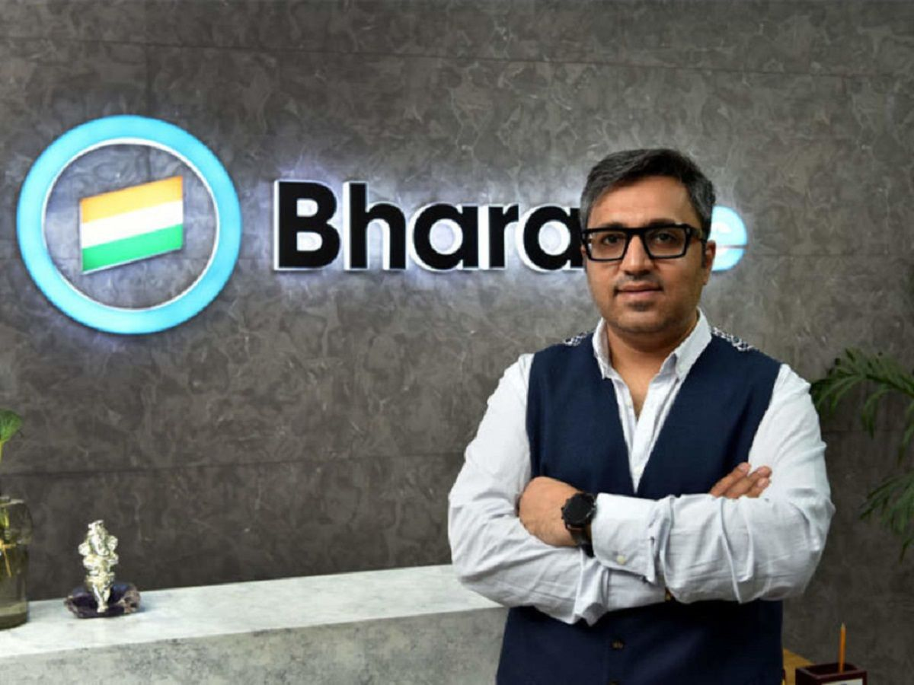
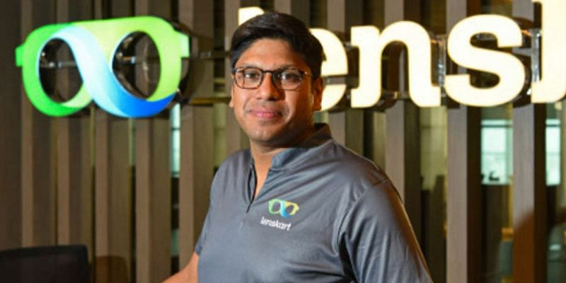
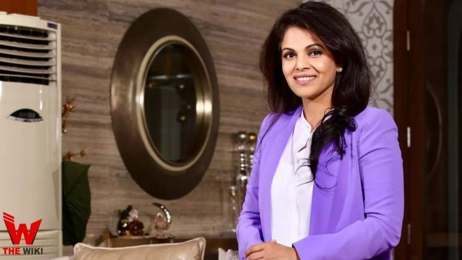
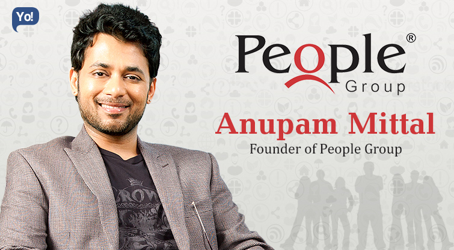
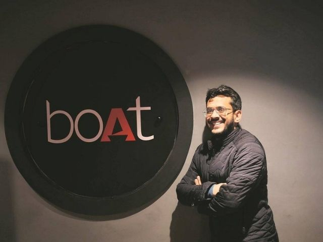

Ashneer Grover,MD and Co-founnder of BharatPe
Ashneer Grover is the managing director and Co-founder of BharatPe. He has done his Bachelor of
Technology (B.Tech.) in Civil Engineering. He co-founded Bharatpe with Shashvat Nakrani in 2018.

Peeyush Bansal, founder as well as CEO of Lenskart.com
Peyush Bansal is the CEO and Founder of Lenskart. He did his undergraduate from
McGill University and post-graduation from the Indian IIM Bangalore.He founded Lenskart in 2010 with the help of Amit Chaudhary and Sumeet Kapahi.

Namita Thapar - Executive Director of Emcure Pharmaceuticals
Namita Thapar is the executive director of Emcure Pharmaceuticals. She is a chartered
accountant from ICAI and earned an MBA from the Fuqua School of Business at Duke University.

Anupam Mittal - Founder and CEO of Shaadi.com - People Group
Anupam Mittal is a Co-Founder and CEO of Shaadi.com - People Group. He has done his MBA in Operations
and Strategic Management from the Boston College in the USA. He founded Shaadi.com in 1997.

Aman Gupta - Co-Founder and Chief Marketing Officer at boAt
Aman Gupta is the Co-founder of boAt Lifestyle. He did his MBA from Kellogg School of Management.
Aman Gupta founded BoAt in 2011 with Sameer Mehta. Before co-founding Boat, he was the director of sales at Harman International.
